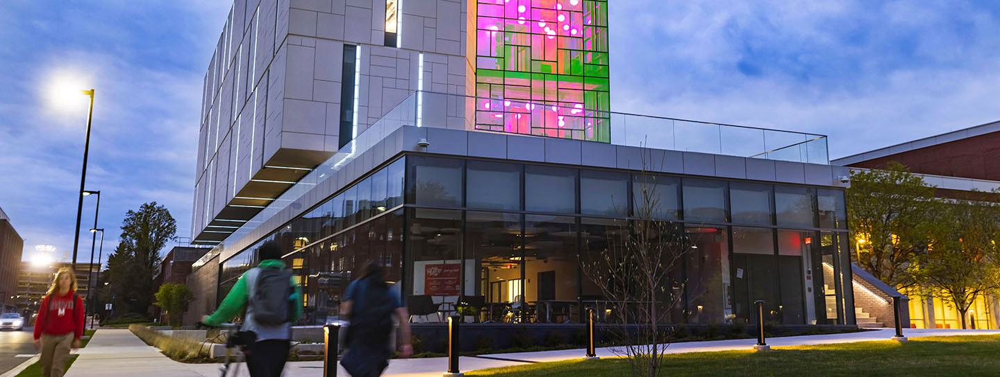

Consistently ranked as one of the best values in public higher education, you can rest assured that you will receive an affordable world-class education at the University of Maryland (UMD).
College Is a Major Investment
The University of Maryland is here to help. We offer an array of financial aid programs—including scholarships, grants, loans and student employment—as part of our commitment to making an excellent education affordable.
We understand that without financial support, a college degree would be out of reach for many talented students. UMD has a long history of providing financial support to students of all economic backgrounds. If you need help, we are here to help you navigate the financial aid process and understand your options.
Six-year graduation rate
Average starting salary after graduation
Of all freshmen received some form of financial aid
2022–23 admission cycle
There are various types of financial aid available. These types of aid can be classified as either need-based, meaning you and your family are not able to cover educational expenses, or non-need based, which generally refers to aid you receive based on merit or qualification.
Scholarships and grants provide funding that you don't have to pay back. These offers are based on financial need and/or academic achievement. Students are automatically reviewed for some merit scholarships if they apply by the early action deadline.
FWS is a federally funded program designed to assist students in meeting their educational and living expenses through part-time employment. Opportunities can be found both on- and off-campus and are available to students who demonstrate financial need (determined through the FAFSA).
Loans are borrowed funds that you have to pay back after graduation. Federal loan terms vary based on financial need. The FAFSA is the only application needed to be considered for federal loans. Private loans are not based on need.
As part of the financial aid offer, Terrapin Commitment funds are provided to eligible students to reduce the gap between offered aid and the actual cost of attendance.
Learn more about the types of aid, UMD's financial aid process and more by visiting the Office of Student Financial Aid website.
We encourage students to take the following steps to educate themselves about financing a higher education and prepare to choose the best college for them.
Research Financial Aid at UMD
Researching a school's cost of attendance and getting familiar with their financial aid process and terminology is a great start to turning your dream into a degree.
Apply Early Action to UMD
Submitting a complete UMD application by the early action deadline gives students best consideration not only for admission, but for merit scholarships as well: November 1 for freshman applicants; March 1 for transfer applicants.
Submit the FAFSA
The FAFSA is an essential tool in securing need-based support such as grants, work-study, student loans and some scholarships. Students must submit the FAFSA once a year to figure out what types of financial aid they are eligible to receive.
The FAFSA can be submitted before or after completing a UMD application. To ensure the FAFSA is processed correctly, make sure it is sent to University of Maryland, College Park (FAFSA school code 002103) and include the student's social security number in both the FAFSA and UMD application. The 2024-25 FAFSA will launch in December, and UMD's priority deadline for this cycle will be April 1, 2024.
Let's stay in touch!